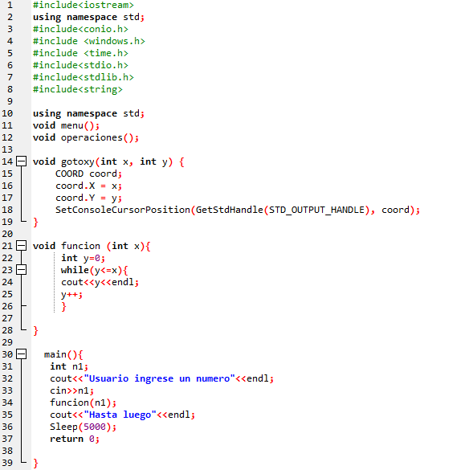

ACTIVIDAD 2 PERIODO 2

INFORME DE LA ACTIVIDAD
En esta actividad aprendemos y utilizamos la forma de usar las funciones implementando diferentes ejercicios como en este caso lo hacemos con el ciclo "while".